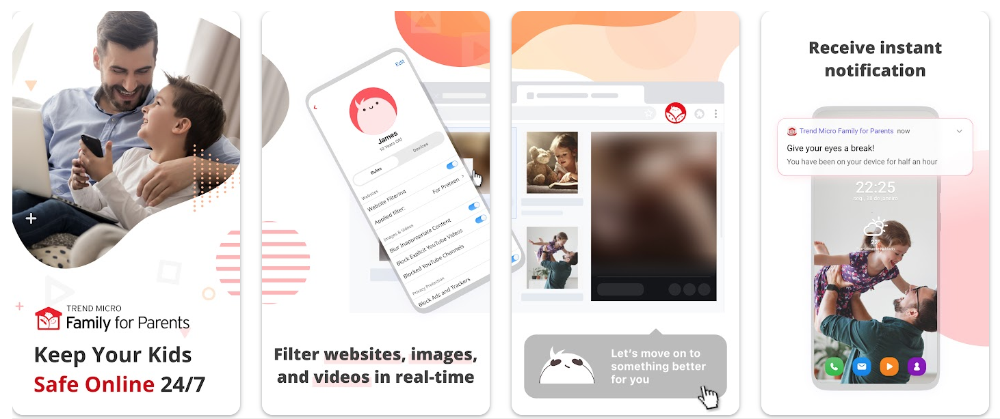
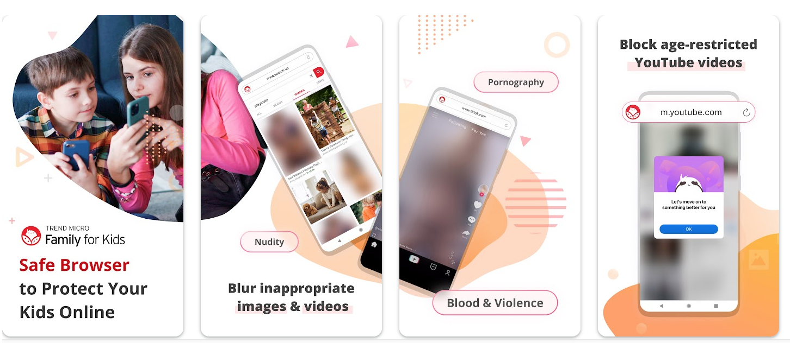
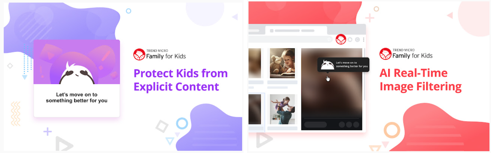

ABOUT
Trend Micro Family: App/Web Extension
SCOPE: |
Work |
|---|---|
TYPE: |
UI/UX |
DATE: |
Jan 2021 - March 2021 |
Company: |
Trend Micro Inc. |
ROLE: |
UI/UX Designer |
OVERVIEW
About Trend Micro Family
Trend Micro Family is a tool that can help parents to protect their kids online and keep their kids away from harmful content. Parents will have to install the parent app on their cell phones and another kid app on at least one of their kids' devices (phones, tablets, and/or computers) in order to make the tool worked actively.
Key features I worked on:
- Onboarding tutorial to guide parents to install both parent app and kid app
- Online activity monitor dashboard
SKILLS
UI/UX design, wireframe/mockup, prototyping, user research, data analysis
TOOLS
Axure, Figma
PROCESS
Context
The rise of the global pandemic
More and more people were being forced to stay at home and that also indicated more children need to use the Internet to study at home, interact with friends, and therefore children are inevitably more directly exposed to the Internet with or without parental supervision.
Evidences from news, reports and user researches (that Trend Micro had conducted) had shown that many parents are concerned about their kids being online to a certain degree. Thus, by leveraging Trend Micro's decades of security technology experience and understanding that parents are concerned about their kids' online safety, our team intended to build a digital tool to help parents to protect their kids online.
Consideration
Freedom V.S. Protection
The relationship between children and Internet is important in society. However, there is a tension between allowing children the freedom to explore the Internet freely and supervising children online activies to keep them away from dangers and harmful information.
To me, I especially don't like the idea of being monitored no matter the person is my loved ones or close relatives. Thus, this product idea was really a hard one that I could imagine at first.
As I tried to understand the potential users, the idea of parental supervision is not something completely terrible. It is more about how to balance the freedom and protection. I realized that the kids' age and the harmful content were the keys to making the product work.
Thus, together with the team, we decided to focus on the idea of identifying the harmful information and warning the parents apporpriately so the parents can "talk" (interact) with their children accordingly.
Contribution
How I helped
- UI/UX:
To help the team better visualize what our product was about and how it was constructed, I created wireframes and user flows to show all the main functionalities and the interactions.
- Collaboration and Communication:
- Testing and Review:
After wireframes and flows were confirmed, I used the design documentation to collaborate with the visual designers to finalized the looks and feels. While the visual designers were composing the visual design specs, I also colloborated with the developers to work on developing the functionalities.
When the internal product builds were released, I was one of the main testers to ensure functionalities, flows, looks and behaviors were developed as listed and unexpected behaviors were taken care of.
RESULT
Parent app
Trend Micro Family for Parents
To protect kids online from harmful content, parents can start from installing the parent app first. The product allows parents to manage content restrictions and check kids' Internet activities and helps to provide families a safer and healthier online space for children.
Kid app
Trend Micro Family for Kids
After the parent app is successfully installed, parents can install the kid app on children's devices (phones and/or tablets) as an agent to guard children's online activities.
Web Extension for kids
Trend Micro Family for Kids - Safe Filter
After the parent app is successfully installed, parents can install the web extension on the Internet browsers that children used on computers, so the web extension can act as an agent to guard children's online activities.
